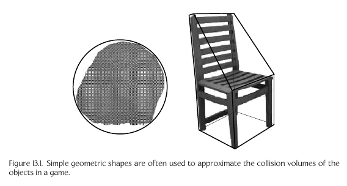
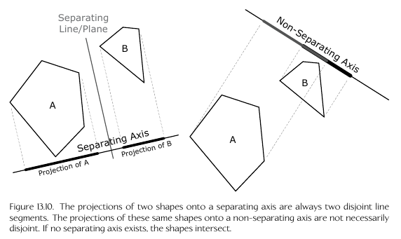
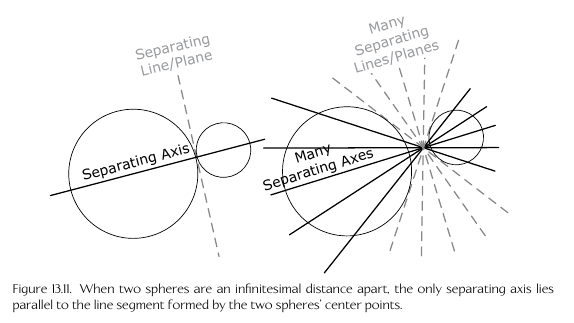
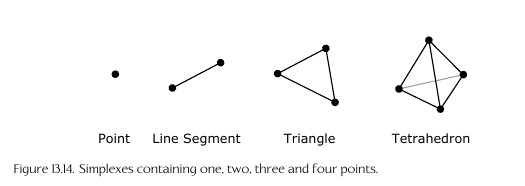
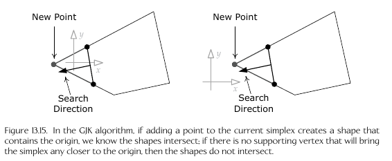
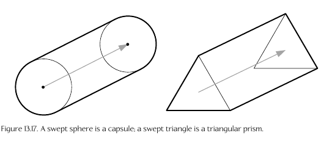
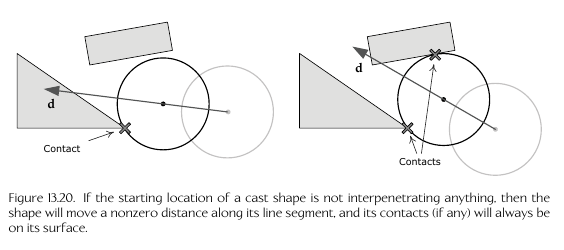
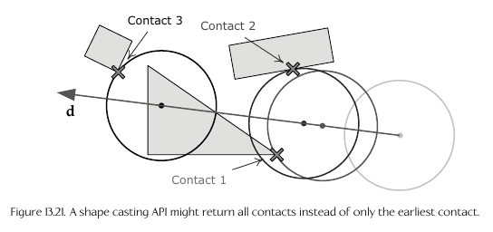

Popular Collision and Physics Libraries
Collidable Representation
- The intersection shapes/primitives for an object in the scene are stored via its own
geometry and transformation (its 'collision representation')
- Some common intersectable shapes used include
- sphere
- capsule
- Axis Aligned Bounding Box (AABB)
- Discrete Oriented Polytopes (DOP)
- Polygon Soup (Poly Soup)
- These are also called 'collision volumes'
- Scene objects can contain multiple collision primitives
representing them (e.g. a chair can be represented by a cube
and a triangular prism)
- 
- This can also be used for early-termination checking:
a coarse check of a larger,wrapping primitive can be
used as an easy first-check for intersection
- Usually the collision engine contains a 'collision/physics world'
in which all collidable objects are represented
- benefit of cache coherency
Convex/Concave
- Usually convex shapes are used as a line can only enter
and exit a convex shape once (concave adds more complexity)
- If a concave shape is shrink-wrapped, there will be air
pockets; convex shapes will have NO air pockets when
shrink wrapped
Poly Soup
- A collection of non-convex shapes, not necessarily enclosed
or in a 'shape' form
- Used to represent complex static geometry like terrain and buildings
- Front-face is used to represent 'outside' (via stored winding
order) and back-face represents 'inside'
Sphere intersection test
- s = c - p
- if |s| <= r, then p is inside the sphere
- c = sphere center, p = test point, r = sphere radius
Sphere intersecting other sphere test
- s = c1 - c2
- if |s|2 <= (r1 + r2)2, then
the spheres intersect
- Difference squared is used to prevent square root calculation (|s|)
for performance
Separating axis theorem
- If there is a line that can separate the projection of
two convex shapes, then they do not intersect
- 
- 
GJK Algorithm
- Works for intersection testing between arbitrary polytopes
(convex polygons in 2d, convex polyhedra in 3d)
- http://mollyrocket.com/849
- Uses the 'minkowski difference'
- Takes difference between all points within shape A and B
- If the set contains the origin point, then the shapes intersect
- since any point minus itself is 0 or the origin
- The minkowski difference between two convex shapes is also a
convex shape
- Attempts to create a tetrahedron that surrounds the origin from
the minkowski difference set
- If this tetrahdron cannot be created, then the shapes do not intersect
- 
- 
Paper Bullet Problem (Tunneling)
- If an object is moving faster than its size each, it can
"skip over" an intersection
- Can be solved via
- Swept Shapes: create a new shape as the combination
of the previous and next frame
- 
- Only works well for moving in a straight line
- Continuous Collision Detection (CCD)
- Finds the earliest 'Time of Impact' (TOI) between
two objects over a time interval
- Collision detection can be expensive, esp. if you check
every possible object with each other (O(n2))
- Can use techniques we've seen before in the render
such as spacial partitioning
- Octtrees
- Binary Space Parititioning Trees (BSPs)
- etc.
- Other techniques:
- Temporal Coherency (Save calculated values that haven't
changed from the previous frame)
- Broad Phase, Midphase, and Narrow Phase
- Broad Phase: Use AABBs to determine which collidables
are potentially intersecting
- Midphase: Use coarse bounding volumes, such as spheres
for another early termination step
- Narrow Phase: Use the individual primitives for
the closest/specific possible collision detection
- Sweep and Prune algorithm
- sort the minimum and maximum dimensions of the AABBs
along the x,y,z axes then check for intersection
along the sorted list
- Can reduce O(n log n) to O(n)
Collision Queries
- Most physics engines support checking things such as
"What is the earliest intersection if I move this character
in this direction" or "find all enemy objects within this
radius"
Raycasting
- Have paramtetric line segment p(t) = p0 + td, 0<=t<=1
- Check for intersection along this line
- Example ray casting usage: check for line of sight
from an AI to the character by ray casting from the
AI point of view to the main characters chest, and seeing
if any intersections get in the way
Shape Casting
- Move a collision volume along a parametric line segment
and check for intersections along the way
- This is more complex as you can have multiple
collision points at the same time; usually returns
an array of collisions
- 
- 
- Can be used to move 3d objects, and do things like
automatically move up a curb or move left/right against
a wall
Phantoms
- Collision objects which can intersect with regular objects,
but regular objects cannot collide with them
- regular collisions with a phantom are ignored, but a phantom
can still collide with regular objects
Collision Filtering
- Ability to group collision types together to only
check between collisions of the same types
- Uses masking or layers (e.g. a grouping bitmask)
- Also ability to turn collision on/off for an object
Collision Materials
- Holds information such as friction, sound effects,
particle effects, etc. for an object types such as skin,
wood, metal, etc.
TODO - left off on 13.4 Rigid Body Dynamics